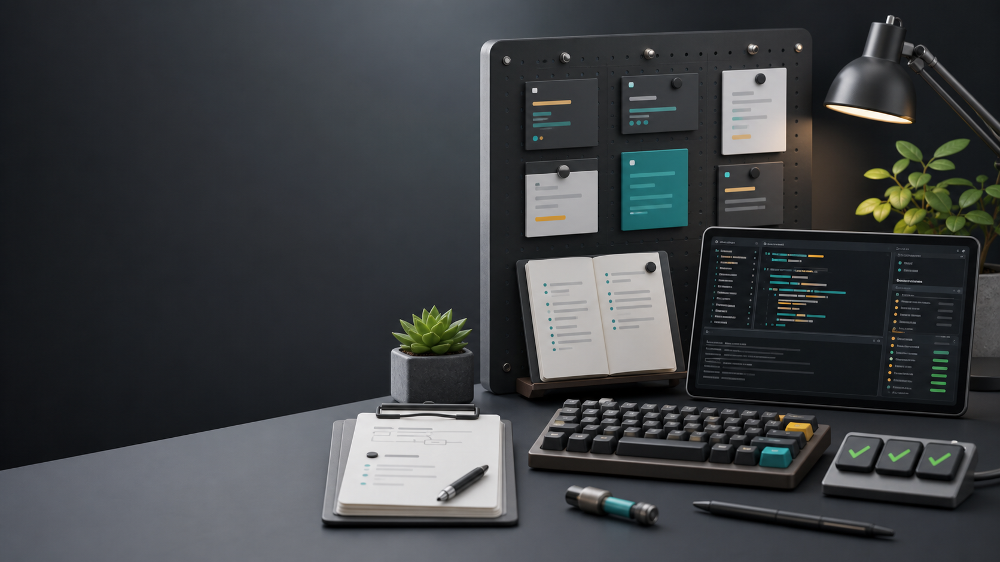

Explain the model
Trace task normalization, filtering, summaries, and sprint planning.
No-dependency JavaScript playground
A compact repository where agents can read unfamiliar code, make a focused change, run deterministic checks, and leave a tidy pull request behind.

The repository is intentionally small, with enough real structure to exercise code reading, behavior changes, tests, docs, and PR communication.
Trace task normalization, filtering, summaries, and sprint planning.
Keep CLI behavior focused while preserving existing report output.
Use deterministic data checks to keep the canonical board reliable.
Render Markdown output that remains easy to test and review.
Summarize scope, checks, and tradeoffs for future agents.
Recommended workflow
Start with the README and relevant source, pick one scenario, make the smallest useful change, then rerun the fixture validation and tests before writing the PR notes.
rtk node --test
rtk node scripts/validate-fixtures.js
rtk node src/cli.js --file data/tasks.json
rtk npm test
rtk npm run validate
rtk npm run reportThe codebase has just enough surface area for meaningful agent practice without requiring package installation.
src/task-board.jsTask normalization, filtering, summaries, and sprint planning.
src/report.jsMarkdown board report rendering for deterministic output.
src/cli.jsCommand-line entrypoint for reading fixtures and printing reports.
data/tasks.jsonCanonical fixture data for tests, reports, and validation.
test/Coverage using Node's built-in test runner.
docs/Exercise scenarios and the agent playbook for focused PRs.